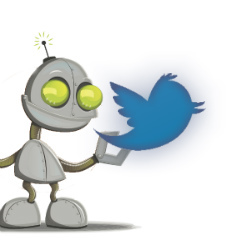

Main Page | Media | About the Author
Social media has become a large part of the average person's life in today's day and age. Almost everybody is connected to at least one form of social media, and many are on multiple different platforms. And while it is great for staying connected with family and friends, and even meeting new people, it's also changed the way we receive information completely. When we used to get our news from credible reporters that worked for Newspapers and TV stations, we now can read a tweet or blog post from someone who might not actually know what they're saying.
While the misinformation itself is bad, it has recently turned into a much bigger issue. There have been many cases of botted accounts, "bots", flooding social media platforms. These bots are not real humans, but basically an autonomous agent that are built to influence the discussions and way of thinking of any actual users that come across the account. While originally this wasn't much of a problem as the bots were fairly easy to differentiate from a real user, and were often pushing for people to click links to fishy websites, in the past couple of years they've grown and developed into something much more dangerous.
In recent years this issue has made some serious noise. In the infamous 2016 election, some studies state that 19% of all tweets about the presidential race, were created by social media bots. When a debate would take place on air a large stream of accounts would start using certain hashtags and keywords to worm their way into the feeds of users, and start pushing certain agendas. It's a case decscribe as "information warfare" that is heavily thought to have been conducted by the Russian government as a way to influence US politics. What these bots did was spread misinformation and, succesfully, create certain naratives to US voters.
While the exact numbers are debated, the presence of social media bot influence is undeniable. It's become alarming just how easily user's can be tricked on social media and how quickly they buy into information that best fits the narrative that they personally believe in. Bots are something unavoidable, and while platforms do their best to moderate and weed out bot accounts there will always be some that get through the security, so it's important to read everything with a hint of suspicion online now.
"In 2014, Twitter disclosed in a report to the Securities and Exchange Commission, that over 23 million — or 8.5 % of Twitter’s monthly active users were bots."- Sherryn Groch
Quick facts
|
2016 US Presidential Election |
While debates took place, many tweeted about the election. It was later found that during one 90 minute debate, about 4.8% of twitter users participating could be identified as clear bots. While small in number, these accounts were also found to garner some of the most attention in during the debate, receiving larger amounts of retweets than actual users. |
| Twitter and Instagram | One article written in August 2018 states " social media platforms like Twitter and Instagram are aware of the issue, catching 6.4 million bots a week, coming out to be almost half a million bots a day." |
| Research Studies | In a recent study by Pew Research Center it was found that only 47% of Americans feel somewhat confident they could tell a bot apart from a real user, and 34% of the participants in surveys said they had never heard about social media bots before. |